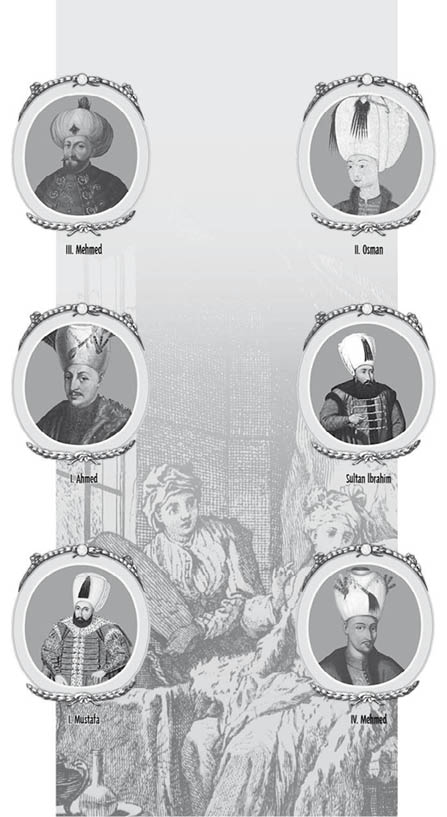
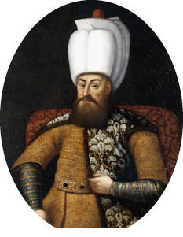
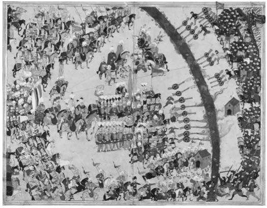
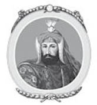
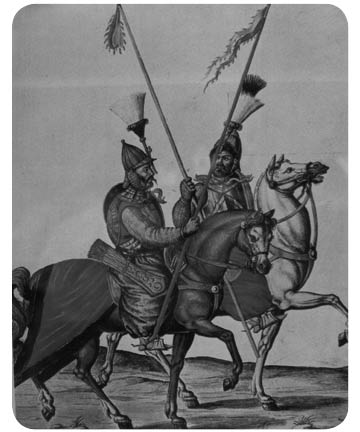

XII : VALİDE SULTANLARIN EGEMENLİĞİ
1578-1656
Sadrazam Sokullu’nun ardından, tahta çıkan güçsüz ve yeteneksiz padişahların yerine devleti yönetebilecek bir sadrazam bulunana kadar uzun yıllar geçmiştir. Güç, padişahların hareminde bulunan kadınların ellerine geçmiştir. Uzun bir süre boyunca, Venedikli asil bir ailenin soyundan gelen ve henüz genç bir kızken korsanlar tarafından ele geçirilip Sultan III. Murad’ın haremine köle olarak satılan Safiye Sultan nüfuz sahibi olmuştur. Safiye çok zeki ve hırslı olmanın yanı sıra çok da güzel bir kadındır ve Murad onu haremindeki tüm diğer cariyelerden ayrı tutmuştur. Fakat Murad’ın annesi Valide Sultan, Safiye’nin siyasî alandaki nüfuzunu kıskanmış ve oğlunun aklını iki güzel cariyeyle çelmeyi başarmıştır. Daha sonra harem kalfası ve yardımcısı, güzel cariyeleri sultana sunarak bu yöntemi devam ettirmiş ve bu da tutsak pazarında cariye fiyatlarını arttırmıştır.
Bu kadınların etkisi altında kalan Murad hayatını haremindeki sefahate adamıştır. Murad’ın yüz üç çocuğunun olduğu ve bunların ancak kırk yedisinin hayatta kaldığı sanılmaktadır. Murad’ın en büyük oğlunun annesi olan Safiye Sultan, cariye olarak Murad’ın gözünden düşmüş olmasına karşın zekâsıyla devlet işlerinde etkili olmayı sürdürmüş; fakat gücünü bahsedilen diğer cariyelerle paylaşmıştır. Valide Sultan’ın ölümünün ardından Safiye Sultan eski gücüne kavuşmuştur. 1595 yılında tahta geçen oğlu III. Mehmed üzerinde bir otorite kurmuştur. Bu da Safiye Sultan’ın yirmi sekiz yıl boyunca devlet işlerinde büyük bir güce sahip olmasını sağlamıştır. Mehmed de babası gibi devlet işlerinde etkin olamamıştır. Tahta çıkışını, on dokuz erkek kardeşini öldürerek ilan etmiştir. Bu ölümleri, talihsiz şehzadelere yakışır bir hale getirmek için cenaze merasimi düzenletmiştir. Şehzadelerin naaşları, devletin ileri gelenleri eşliğinde babalarının yanına gömülmüştür. Bu şehzadelerin en büyüğünün ileride tahtta hak iddia edebilecek vârislere hamile olan altı gözde cariyesi çuvallara konularak Boğaz’ın serin sularına atılmıştır.

Mehmed, tahta çıkmadan önce devlet işleriyle ilgili deneyim kazanması için valilik yapmasına izin verilen son padişah olmuştur. Mehmed’den sonra tahta geçen sultanlar, vârislerini İstanbul’daki sarayda bir “kafes”e hapsederek dış dünyayla olan bütün bağlantılarını kesmiş böylece şehzadeler devlet işleriyle ilgili ne bir deneyim ne de bir bilgi sahibi olmuştur. Kafesteki şehzadeler ya sultan olup devleti yönetmiş ya da öldürülmüştür. Bazı tarihçiler, tahtın vârislerine uygulanan bu yöntemin Osmanlı hanedanının içler acısı bir hale gelmesinin esas sebebi olduğunu ileri sürmüştür. Şehzadelerin kafese kapatılması şüphesiz devletin gerilemesine sebep olmuş; fakat bu küçük düşürücü uygulamaya maruz kalmamış ve tahta çıkmadan önce valilik yapmış olan II. Selim, III. Murad ve III. Mehmed de halefleri gibi zayıf olmuştur.
Amaçsız geçen sekiz yıllık egemenliğin ardından Mehmed’in yerine oğlu Ahmed tahta çıkmış ve on dört yıl boyunca egemen olmuştur. Ahmed de babası ve dedesi gibi yönetimde başarısız olmuştur. Haremindeki cariyelerin etkisi altında kalmıştır. Safiye Sultan ise artık gücünü kaybetmiştir. Ahmed’in 1617 yılındaki vefatının üzerine yerine oğlu değil kardeşi Mustafa geçmiştir.
Ahmed, kardeşinin hayatını bağışlamış ve bu sayede Mustafa haleflik kanunu sayesinde tahta çıkmış; fakat birkaç ay sonra tahttan indirilmiştir. Yerine, Ahmed’in oğlu ve devletin idaresinde daha yetenekli olan II. Osman geçmiştir. II. Osman dört yıl süren kısa hükümdarlığı sırasında tahttan indirilip öldürülmesini talep eden Yeniçeriler tarafından sevilmemiştir.
Bunun üzerine Mustafa tekrar tahta çıkarılmış; fakat birkaç ay sonra da tekrar indirilmiştir. Mustafa’nın yerine Ahmed’in oğlu on iki yaşındaki IV. Murad geçmiştir. IV. Murad aklıselim bir yaşa gelene kadar da Osmanlı İmparatorluğu’nu aslında zeki bir kadın olan annesi Valide Sultan yönetmiştir. Murad’ın kendinden önce gelen altı padişahtan farklı olduğuna ilerleyen sayfalarda değinilecektir. Küçük yaşta tahta çıkmış olduğu için kendisini haremin etkisinden korumuş ve Osmanlı hanedanının savaşçı bir ruha sahip olan ve ordularını savaş alanlarında komuta eden son padişahı olmuştur. Murad’ın egemenliği yalnızca sekiz yıl sürmüştür. 1640 yılında vefat etmesi üzerine sefahat düşkünü kardeşi II. İbrahim tahta geçmiş ve İbrahim’in sekiz yıl süren egemenliğinde harem eski gücüne kavuşmuştur.
İbrahim’den sonra tahta IV. Mehmed geçmiş ve harem sekiz yıl daha gücünü korumuştur. Bu kısa açıklamalardan, 1578 yılında Sadrazam Sokullu’nun ölümünden 1656 yılına kadar geçen yetmiş sekiz yıllık süre boyunca tahta çıkmış olan yedi sultan döneminde, Sultan IV. Murad’ın sekiz yıl süren egemenlik dönemi hariç olmak üzere, esas gücün haremdeki kadınların elinde olduğu anlaşılmıştır. Yetmiş sekiz yılın yirmi sekizinde imparatorluğun esas hükümdarı, adı çok fazla bilinmeyen diğer cariyelerle birlikte, Safiye Sultan olmuştur. Sadrazamlar, ara sıra Yeniçerilerin müdahalelerinin de olmasına rağmen, çoğunlukla cariyelerin istekleriyle sadrazam olmuş veya görevden alınmıştır. Sadrazamlar nadiren bir yıldan fazla bir süre bu mevkide bulunmuştur. Safiye Sultan tamahkâr ve hırslı bir kadın olmuştur. Safiye Sultan’ın ve ondan sonra güç sahibi olan diğer kadınların etkisiyle birlikte yüksek veya düşük tüm mevkiler satılmaya başlamış ve bu sistem imparatorluk çapında geçerlilik kazanmıştır.
Kanuni Sultan Süleyman döneminde sadrazamlık yapan Rüstem Paşa’nın vilayet valiliğine veya diğer yüksek rütbeli görevlere tayin edilen kişilerden ödeme alma sistemini başlatan ilk kişi olduğu söylenebilir; fakat Rüstem’in almış olduğu paralar sabit olmuş, doğrudan devlet hazinesine aktarılmış ve sistem orduyu kapsamamıştır. Ancak bu ödemeler daha sonradan keyfi ve genel geçer bir hal almış ve de ordu atamalarına dek uzanmıştır. Bu haraçlardan hem sultan hem de harem kendi paylarını almıştır. Sadrazamlar ancak sultana ve çevresindekilere büyük paralar vererek sadrazam olabilmiştir.

III. Murad
Von Hammer, III. Murad’ın en sevdiği adamlarından biri olan ve eski Osmanlı sultanlarından birinin Karadeniz kıyılarında bulunan vilayetlerinin egemenliğini ellerinden almış olduğu ailenin soyundan gelen Şemsi Paşa’nın, Sultan III. Murad ile yapmış olduğu bir görüşmenin ardından sevinçle şunları söylediğini belirtmiştir: “Sultan’ı Osmanlı’nın çöküşüne hazırlamaya ikna ettiğim için Osmanlı Hanedanı’ndan intikamımı aldım!” Bunu nasıl yaptığı sorulduğunda ise cevabı: “Sultanı kendi yararına olan şeyleri satmaya ikna ederek! Sultana davetkar bir tuzak hazırladığım doğru. Kırk bin altın çok da küçük bir meblağ sayılmaz. Artık sultan yolsuzluklara başlayacak ve yolsuzluk da imparatorluğu yok edecek!” olmuştur.1
1 Von Hammer, vii,. s. 4.
Mevkilerin satışına dair başlatılan bu kötü uygulama, imparatorluk çapında en alttan en üst kademeye kadar bütün yönetim sisteminin rüşvet ve yolsuzluğa bulaşmasına yol açmıştır. Diğer görevlilerle birlikte kadılar da yolsuzluğa bulaşmış ve kararlarını en yüksek teklifi sunanların lehine vermiştir. Kadılara rüşvet veren adi suçlular serbest bırakılmıştır. Kanunlara duyulan güven kökten sarsılmıştır. En düşük kademeden en yükseğine kadar bütün görevliler, kendilerini bu görevlere tayin eden kişilerin rızası dâhilinde görevlerini sürdürmüş ve azledilme ihtimaliyle karşı karşıya kalmıştır. Bu görevlere gelebilmek için büyük paralar ödemiş olan kişiler de su akarken testiyi doldurmak için, kendi zararlarını, astlarından haraç alarak ve bölgelerindeki insanları yağmalayarak telafi etmeye çalışmıştır.
Ordu da bu tehlikeli sisteme dahil edilmiş ve subaylar yeteneklerine göre değil keselerinin doluluklarına göre orduya alınmış veya terfi etmiştir. Böylece ordunun disiplini gevşemiştir. Ayrıca askerlerin ödemeleri değeri düşürülmüş akçelerle yapıldığı için yaptıkları hizmetle ilgili memnuniyetsizlikler doğmuştur. Buda ve Tebriz sınırlarındaki karargahlarda ayaklanmalar baş göstermiştir. Yeniçeriler kontrolden çıkmıştır. Yeniçerilerle Sipahiler arasında anlaşmazlıklar doğmuştur. Yeniçeriler, sürekli olarak, vezirlerin veya diğer bakanların görevden alınması ve hatta infazının gerçekleştirilmesini talep etmiş, namert sultanlarla haremlerindeki kadınlar da bu taleplere razı olmak zorunda kalmıştır. Transilvanya, Moldova ve Eflak’ta isyanlar çıkmıştır. Lübnanlı Hıristiyanlar, Türklere karşı ayaklanmıştır. İmparatorluğun diğer bölgelerinde de eşkıyalık içler acısı boyutlara ulaşmıştır.
Haremdeki kadınlar genelde savaş yanlısı olmamıştır. Venedik soyundan gelen Safiye Sultan yıllarca Venedik Cumhuriyeti ile yapılacak olan savaşların önüne geçmiştir. Ayrıca Avusturya ile de barış sağlanmış ve birkaç yıl sürdürülmüştür. Fakat Transilvanya ile Eflak’ın ayaklanma çıkardığı dönemde Avusturya ve Macaristan buradaki halkı desteklemek adına 1593 yılında Osmanlı Devleti’ne savaş açmıştır. İmparator Maximilian ve Macar General Kont Palfi komutasındaki orduları Estergon, Peşte ve Bükreş ile Türklerin diğer kalelerini işgal ederek Tuna’ya gelmiş, daha sonra da Tuna’yı geçerek Varna’ya ulaşmıştır.
Birçok kalenin ele geçirilmesi ve Türk ordusunun bozguna uğramasının ardından İstanbul dehşete düşmüştür. Halk arasında Sultan Mehmed’in geçmişte seleflerinin yapmış olduğu gibi ordunun başına geçerek Türk askerlerinin güvenini tekrar kazanması gerektiğine dair bir istek doğmuştur. Ordunun dinî duygularına hitap etmesi istenmiştir. Mehmed bu görevi kabullenmek istememiş ve İstanbul’daki sarayında kalmayı tercih etmiştir. Oğlunun kendisinden uzak kalmasıyla üzerindeki etkisini yitireceğinden korkan Safiye Sultan da oğlunun kararını desteklemiştir. Diğer yandan, Mehmed’in üzerinde büyük bir nüfuza sahip olan akıl hocası tarihçi Sadeddin ise tam tersini savunmuştur. Nihayetinde, Yeniçeriler, padişahları başa geçmeden sefere gitmeyi reddedince sultan istemeden de olsa ordunun başına geçmek zorunda kalmıştır. Hz. Muhammed’in kutsal emanetleri olan sancağı ve hırkası sefer için getirtilmiştir. Osmanlılar, işgalci kuvvetlerle karşılaşmak için gösterişli bir şekilde kuzeye doğru yol almıştır. Avusturyalılarla Macarlar bu görkemli ordu karşısında geri çekilmiştir. Bulgaristan’da ele geçirmiş oldukları tüm kaleleri terk edip Tuna’yı tekrar geçmişlerdir. İki ordu nihayetinde Macaristan’da 24 Ekim 1596 tarihinde karşı karşıya gelmiş ve üç gün süren unutulmaz bir savaş yaşanmıştır.
Mehmed ordunun yönlendirilmesinde pek fazla görev almamış, asıl kumandan sadrazam olmuştur. İkinci kumandan ise İtalyan asıllı Müslüman olan cesur ve azimli asker ve haremdeki kadınların gözdesi Cicala’dır.2 Sultan ise muhafızlarının etten duvarı arasında savaş alanında bulunmuştur. Savaş esnasında Peygamberin kutsal sancağı çıkarılmış ve askerlerin gayretlenmesini sağlamıştır. Savaşın ilk gününde Türk ordusunun bir bölüğü yenilgiye uğratılmıştır. Bunun üzerine savaş meclisi toplanmış ve Mehmed daha fazla çatışma yaşanmaması adına geri çekilmekten yana olduğunu bildirmiştir. Sadeddin bu duruma şiddetle karşı çıkmış ve “Bir Osmanlı padişahının makul bir nedeni olmadan düşmana sırtını döndüğü ne görülmüş ne de duyulmuştur.” demiştir. Bunun üzerine Mehmed, kendisinin savaş alanını terk ederek sadrazamı Hasan Paşa’nın orduyu komuta etmesini önermiştir. Sadeddin, “Bu paşaların işi değildir, padişahın varlığı kaçınılmaz derecede gereklidir.” demiştir. Savaşa, sultan ile birlikte devam edilmesine karar verilmiştir.
2 Scipione Cicala/Yusuf Sinan Paşa (?-1606). (çev.)

Haçova Meydan Muharebesi
Osmanlılar için savaşın ikinci günü de kötü geçmiştir. Savaşın üçüncü gününde, 26 Ekim’de, iki ordu birbirine daha da yaklaşmıştır. Kont Palfi komutasındaki Macar ordusu iki koldan Osmanlı cephanelerine saldırmış ve silahlarını ele geçirmiştir. Osmanlılar savaşı kaybetmiştir. Oldukça uzun bir devenin üstünde muhafızlarınca çevrelenmiş bir vaziyette oturan sultan, ordusunun tarumar edilişini izlemiştir. Henüz vakit varken kaçıp kurtulmak gerektiğini bildirmiştir. Fakat Kur’an’dan alıntı yapan Sadeddin tarafından tekrar ikna edilmiştir: “Sabır zafer getirir, sabrın evveli acı, ahiri tatlı ve lezzetlidir.” Hz. Muhammed’in hırka-i şerifini omuzlarına alan sultan savaş alanında kalmaya razı olmuştur.
Avusturyalılar, Osmanlı çadırlarına saldırmaya başlamıştır. Rütbelerinin gerekliliklerini çiğneyen imparatorluk askerleri çadırları yağmalamaya başlamıştır. Savaşta rol almamış gayrinizami süvarilerin başında bulunan Cicala büyük bir kuvvetle karşı koymuş ve Avusturyalılar savaş alanını terk etmiştir. Maximilian ve Sigismund hayatları pahasına kaçmak zorunda kalmıştır.
Bu görkemli taarruzun ardından Osmanlılar kaybettikleri her şeyi geri almıştır. Otuz bin Avusturyalı ve Macar asker savaşta yaşamını kaybetmiştir. Doksan beş adet silah ele geçirilmiştir. Arşidük’ün çadırı ve hazinesine el konmuştur. Bu zafer, Osmanlılar için beklenmedik bir zafer olmuştur. Zaferde sultanın bir rolü olmasa da savaş esasen onun sayesinde kazanılmıştır. Sultan kendi kararlarına göre hareket edip savaş alanını terk etmiş olsaydı savaş şüphesiz kaybedilirdi. Sultan, savaşı uzaktan seyretmiş fakat Peygamber’in sancağı ve hırkasını kullanarak askerleri gayretlendirmiştir. Osmanlılara zaferi getiren, Cicala’nın cesareti ve süvarilerinin eşsiz taarruzu ile sultanını savaş alanında durmaya ikna eden Sadeddin’in azmidir.
II. Mehmed zamanında yaşanan Mohaç Muharebesi’nin ardından Tuna sınırlarında başka önemli bir savaş yaşanmamıştır. Bu savaşı Hıristiyanlar kazanmış olsaydı Tuna’nın kuzeyindeki Osmanlı toprakları tamamen kaybedilmiş olacaktı. Maximilian komutasındaki Hıristiyan ordusu bu nehri tekrar geçerek Bulgaristan ile Makedonya’ya ulaşacak ve Osmanlı İmparatorluğu da iki ya da üç yüzyıl önce parçalanma dönemine girmiş olacaktı.
Sultan, savaşın ardından derhal İstanbul’a dönmüştür. Burada, Cicala sayesinde kazanılan zafer için büyük tezahüratlarla karşılanmıştır. Fakat sultan bir daha asla savaş alanında ordularının başına geçmemiştir. Bu zaferden sonra hayatını haremine adamıştır. devletin yönetimi de böylece Valide Sultan’a kalmıştır.
Büyük başarılarının ardından Cicala sadrazamlığa getirilmiştir. Fakat bu seçim talihsiz bir seçim olmuştur. Cicala, savaşta uygunsuz davranışlar sergileyen Osmanlı askerlerine ağır cezalar vermiş ve askerleri korkaklıkla suçlamıştır. Çoğu Anadolu’dan gelen otuz bin askeri dağıtarak evlerine göndermiş ve bu askerler de kendi bölgelerinde isyanlar başlatmıştır.
İstikrarsız bir niteliğe sahip olan bu zaferden sonra Avusturya ile savaşlara devam edilmiş, kaleler kaybedilip geri kazanılmıştır. 1606 yılında barış sağlanmıştır. Genelinde Osmanlıların aleyhine olan bir barış antlaşması, Silvatorok’ta Avusturyalılar ile Osmanlılar arasında imzalanmıştır. Antlaşmaya göre, Transilvanya Osmanlı egemenliğinden alınmıştır. Macaristan’ın yarısının Osmanlı egemenliğinde kalmasına karar verilirken diğer yarısının vergiden muaf olması kararlaştırılmıştır. Estergon, Erlau ve Gradiska kaleleri Osmanlılara verilirken Raab ve Komorn Kaleleri Avusturya’ya bırakılmıştır. Avusturya’nın yıllık olarak Osmanlı Devleti’ne verdiği 30.000 altınlık verginin durdurulmasına fakat bunun yerine tek sefere mahsus 200.000 altının ödenmesine karar verilmiştir.
Osmanlı İmparatorluğu, Transilvanya’daki haklarından vazgeçerek Avrupa’daki topraklarını kaybetmeye başlamış ve bu durum İmparatorluğun çöküşüne dek böyle devam etmiştir.
Bu gerileme diğer bölgelerde de devam etmiştir. İran ile tekrar savaşa girilmiş ve Türkler bir dizi yenilgiye uğramıştır. II. Murad ve III. Mehmed zamanında Osmanlıların almış olduğu bütün toprakların İran’a iade edilmesi ve iki imparatorluk arasındaki sınırların II. Selim zamanındaki sınırlara çevrilmesi koşuluyla 1618 yılında bir süreliğine barış sağlanmıştır. Ayrıca, yolsuzlukların bir sonucu olarak Türk İmparatorluğu çökmeye başlamıştır. I. James tarafından Osmanlı İmparatorluğu’na ilk kez gönderilen İngiliz Elçi Thomas Roe’nun bu dönemde kaleme almış olduğu raporlar sayesinde, imparatorluğun girmiş olduğu bu içler acısı durum hakkında kayıtlara ulaşılmıştır. Fakat elçinin gelişinden birkaç yıl önce de Kraliçe Elizabeth Osmanlılarla ilişkiler kurmuş ve İngiltere’yi işgal etmekle tehdit eden II. Philip’e karşı Akdeniz’deki deniz birliğine katılması konusunda sultana ısrarda bulunmuştur. Osmanlıların cevabı yalnızca dostane olmakla kalmıştır.
1622 yılında Thomas Roe, esasen Cezayir ve Tunuslu korsanların İngiliz ticaretini tahrip etmelerine karşı itirazlarını bildirmek amacıyla özel bir göreve gönderilmiştir. Beş yıl boyunca İstanbul’da kalmış ve Osmanlı’dan durumun düzeltileceğine dair teminat almıştır. Bunun üzerine, Cezayir paşası görevden alınarak yerine başka biri getirilmiştir. Fakat bu değişim, korsancılığa engel olamamıştır. Thomas Roe’nun raporlarında, Osmanlı topraklarında yaşayan insanların içinde bulundukları durumlara, büyük İmparatorluğun parçalanmasının ve çöküşünün belirtilerine yer verilmiştir:
Derebeylerinin topraklarının nüfusu, mera istekleri ve baskılar nedeniyle azaltılmıştır- nüfus o kadar azalmıştır ki, Yunanistan veya Anadolu’nun en iyi yerlerinde üç, dört veya bazen altı gün boyunca at süren bir kişi kendisine veya atına yiyecek temin edebileceği bir köy bulamaz hale gelmiş, bu yüzden de gelir düşmüş ve askerlere ödeme yapılıp sistemin sürdürülmesini sağlayacak olan para kalmamıştır. Bu para bir süreliğine hazineden veya tüccarlarla işçi sınıfından alınan haraçlardan sağlanabilir.3
3 T. Roe’nun Elçiliği, s. 66-67.
Bu illetin imparatorluğu yok edecek şekilde yol aldığından başka bir şey söyleyemem; her geçen gün daha çok değişimi ve daha çok kan akmasını bekliyoruz. Akıllı kişiler idareyi ele almak istemediği için aptallar kendileriyle birlikte diğerlerini de uçuruma sürükleyecektir.
Osmanlı İmparatorluğu, Osman’ın ölümünden sonra on altı ay boyunca birçok farklılıklara sahne olmuştur; askerler devlet yönetimini ele geçirmiş, doyumsuzluk rüzgârına teslim oldukları için daha da çok zalimlikler yapmaya başlamıştır. Bu süre boyunca, üç padişah, yedi sadrazam, iki kaptan-ı derya, beş Yeniçeri ağası ve bütün vilayetlerde de olabildiğine vali değişikliği gördüm; sadrazamlığa seçilen her yeni kişi, diğer kişileri görevlerinden azledip mevkilerini başkalarına satarak zamanını değerlendirmiştir.4
4 A.g.e., s. 178.
Diğer bir bölümde ise Roe, Türkleri savaş ve işgale güdüleyen en büyük etkenin savaş ganimeti olduğunu dile getirmiştir:
Türk askerleri yalnızca savaşa yatkınlığı olan insanlar olmamış, ayrıca savaşmak da istemiştir; bunun nedeni ise kendilerine her türlü iznin verilmiş olmasıdır; askerler fethetmeyi değil ganimet toplamayı ve esir ele geçirmeyi ümit ederek savaşa çıkmıştır. Esir olarak aldıkları her insan cephanelikleri olmuş sattıkları zaman da ticaretin en iyisini yapmışlardır; bu yüzden fethettikleri her köy de cephanelikleri olmuş ve zenginleşmelerine katkı sağlamıştır... Fakat bence kendi ülkelerinin işgal edilmesi ve savaşın kendi kapılarına gelmesi durumunda dünyanın en zayıf ve disiplinsiz düşmanı olurlardı.5
5 A.g.e., s. 206.
Cezayirli korsanlar, yalnızca güçlü oldukları denizlerde değil ayrıca en iyi derebeylik topraklarında da saygısızlıklar yaparak imparatorluğa boyun eğmeyi reddetmiştir.6
6 Ibid. s. 243.
Thomas Roe’nun bu raporları yazmış olduğu on yedinci yüzyılın başlarında, Osmanlı İmparatorluğu’nun görülmemiş bir düzensizlik içinde olduğu ve yönetimin daha kabiliyetli kişilerce yapılması istekleri ile büyük oranda da yönetimin her alanını etkisi altına almış olan yolsuzluk sisteminden dolayı halkının tarifsiz bir sefalet içinde olduğu aşikardır. Bu dönemde Osmanlı’ya komşu güçlerden biri imparatorluğa saldırmış olsaydı imparatorluk bu saldırıya karşı direnemezdi. Fakat II. Philip’in egemenliğinden sonra İspanya da Osmanlı İmparatorluğu gibi çöküş dönemine girmiştir. Almanya ise ülke içinde çıkan dinî savaşlarla uğraşmak durumunda kalmış ve yabancı düşmanlarıyla ilgilenememiştir. Rusya ise o dönemde Türklerin karşısına çıkabilecek kadar gelişme göstermemiştir.

IV. Murad
IV. Murad’ın tahta geçip yönetimi annesinin ellerinden aldığında haremin yıkıcı egemenliğine bir süreliğine de olsa son verildiğine önceki sayfalarda yer verilmiştir. Valide Sultan eşsiz tasarıları olan zeki bir kadındır ve devleti uzun bir süre yönetmiştir. Fakat döneminin zorluklarıyla başa çıkabilecek kadar iyi değildir. İmparatorluk kötü bir dönemece girmiştir. İmparatorluk içindeki karışıklıklardan faydalanan İran Osmanlılara savaş ilan emiş ve Erivan ile Bağdat’ı işgal etmiştir. Berberi vilayetleri olan Cezayir ve Tunus bağımsızlıklarını ilan etmiştir. Bu vilayetler, bir yandan Osmanlıların müttefiklerinin gerçekleştirdiği deniz ticaretine saldırılar düzenlerken diğer yandan da onlarla barış müzakereleri gerçekleştirmiştir. İmparatorluğun iç meseleleri her zamankinden de daha kötü bir hal almıştır. İsteklerini Valide Sultanlara yaptırabilen Yeniçeriler ise sık sık ayaklanma çıkarmıştır.
1632 yılında yirmi bir yaşına ulaşan Murat, devletin egemenliğini ellerine almış ve kendisinden önce tahta çıkmış olan altı selefinden çok farklı olduğunu kanıtlamıştır. Murad’ın gerçekleştirmiş olduğu ilk eylem, sadrazam ile birlikte on altı üst düzey paşanın infazını isteyen Yeniçerilerin ayaklanması ile ilgilenmek olmuştur. Murad boyun eğmek zorunda bırakılmış; fakat bu durumun kendisini küçük düşürdüğünü düşünerek intikamını almaya karar vermiştir. Sipahilerden oluşan sadık bir birliği kendi arkasına alarak en beklenmedik anda Yeniçerilerin önderlerini öldürmüştür. Bu infazlar isyancıların gözünü korkutmuştur. Murad daha sonra kendisini, devleti yolsuzluk ve haksızlık yapan herkesten arındırmaya adamıştır. Bu hedefini acımasız bir şekilde yerine getirmeye çalışmıştır. En küçük bir şüphe duyulması ile en yüksek rütbelerdeki görevliler, sultanın emriyle gizlice öldürülmüş ve cesetleri Boğaz’ın sularına atılmıştır. Murad, yolsuzluk yapanların korkulu rüyası haline gelmiştir. Gerçekleştirmiş olduğu eylemler merhametsizce olsa da imparatorluk içinde düzenin, ordu içinde ise disiplinin tekrar kazanılmasına yardımcı olmuştur. İmparatorluğun her köşesinde Murad’ın egemenliği hissedilmiş ve sultan olarak otoritesi tekrar sağlanmıştır.
Murad bir asker olarak da gayretli ve salahiyetli olmuştur. Yönetimi annesinin ellerinden almasından sonra hükümdarlığı yalnızca sekiz yıl sürmüştür. Bu süre boyunca, İran şahına karşı düzenlenen ve ikisinin de iki yıl sürdüğü seferleri bizzat kendisi yönetmiştir. Seferlerin ilkinde, Murad, Erivan’ı fethetmiştir. İkincisinde ise İranlıların ümitsizce direnişlerinin ardından Bağdat’ı tekrar ele geçirmiştir. İranlıların yirmi bin askerden oluşan karargahından yalnızca altı bin askeri hayatta kalabilmiştir. Osmanlı ordusunun şehri yağmalamasına ve halkı esir olarak almasına izin verilmiştir. Tüm vilayet tekrar Osmanlı himayesine geçmiş ve ancak sekiz yıldan sonra İranlılarla tekrar savaşılmıştır.
Bu seferlerde Murat eşsiz bir çaba göstermiştir. Ordusunun başında yürümüş ve askerlerinin çektiği sıkıntıları paylaşmıştır. Gündüzleri atına vurduğu eyeri geceleri yastık olarak kullanmıştır. İranlılarla meydan muharebesi gerçekleştirilmemiştir. Seferler, kalelerin işgal edilip ele geçirilmesinden ibaret olmuştur. 1639 yılında, ikinci seferinden İstanbul’a dönen Murad büyük bir coşkuyla karşılanmıştır. Kısa bir süre sonra, 1640 yılında ise hummadan ölmüştür. Murad ölüm döşeğindeyken Osmanlı hanedanının hayatta kalan tek erkek vârisi olan kardeşi İbrahim’in infazını emretmiştir. İbrahim, kardeşinin hayatta kaldığı süre boyunca kafeste tutulmuştur. Murad, kardeşinin imparatorluğu yönetmeye uygun biri olmadığının farkına varmıştır. Murad’ın, tahtını kudretsiz bir halefe bırakmaktansa Osmanlı İmparatorluğu’nun son padişahı olmayı tercih ettiği düşünülmüştür. Bazıları ise halefi olarak son ve gözde sadrazamını seçtiğine inanmıştır. Diğer oğlu İbrahim’in hayatını kurtarmaya çalışan Valide Sultan, Murad’ın emrini yerine getirmiş gibi göstermiştir. Ölüm döşeğinde olan padişaha kardeş İbrahim’in emirleri doğrultusunda öldürüldüğüne dair bir mektup göndermiştir. Rivayetlere göre, bu haberi alan Murad zoraki bir gülümsemeyle hayata gözlerini yummuştur.
Osmanlı İmparatorluğu’nun yıkılmasını isteyenlerin Murad’ın Osmanlı hanedanını sonlandırma niyetini gerçekleştirememesini hoşgörüyle karşıladığı söylenebilir. Muhteşem Süleyman’dan sonra tahta çıkmış olan sultanların imparatorluğu uzun bir süre ayakta tutması zaten imkânsızdır. Hırslı bir vezir veya cesur bir maceracının kuracağı yeni bir hanedan imparatorluğun canlanmasını ve parçalanma sürecinin uzamasını sağlayabilirdi. Fakat Tanrı aksini hükmetmiştir.7
7 Dis aliter visum est.
Murad’ın İbrahim’i öldürmek istemesinin nedeni İbrahim’in imparatorluğu yönetebilecek kapasitede olmadığını düşünmesi ise Murad’ın bu fikri daha sonra yaşanmış olan olaylarla tamamen haklı çıkmıştır. Sekiz yıl süren kısa hükümdarlığı sırasında İbrahim, Murad’ın büyük gayretlerle düzeltmiş olduğu her şeyi tekrar bozmuştur. İbrahim yozlaşmış bir sultan olmuş ve doğuştan gelen acımasızlığı yıllar boyunca mahkûm hayatı yaşaması ve bu süre boyunca yaşadığı ölüm korkusuyla daha da körüklenmiştir. İbrahim de kardeşi Murad gibi zalimlikler yapmış; fakat bu zalimlikleri yaparken amacı ordudaki disiplini veya ülkedeki düzen ve adaleti tekrar sağlamak olmamıştır. İbrahim bu merhametsizliğinin yanında cesaretsiz ve para canlısı bir insan olmuştur. Murad’ın zorluklarla biriktirmiş olduğu devlet kaynaklarını zevk-ü sefası ve haremin isteklerini yerine getirmek için harcamıştır. Osmanlı sultanları içinde safahata en düşkün olan Sultan İbrahim olmuştur. Valide Sultan oğlunun isteklerini ona her Cuma yeni bir cariye sunarak karşılamıştır. Böylece oğlu üzerinde büyük bir nüfuza sahip olmuş ve bunu devletin zararına olacak şekilde kullanmıştır. Murad’ın kontrol altına almış olduğu bütün yolsuzluklar ve kötülükler hızla yayılmaya başlamış ve Türk İmparatorluğu da iç işleri açısından yeni bir gerileme dönemine girmiştir. Haremin egemenliği tekrar baskın bir hale gelmiştir. Yeniçerilerle Sipahiler arasında itaatsizlikler ve ayaklanmalar baş göstermeye başlamış ve bu ayaklanmalar ulemalarla İstanbul halkına kadar sıçramıştır. İbrahim’in öldürülmesi için bir komplo hazırlanmıştır. Bu komplo ulema tarafından da desteklenmiştir. Bu planı tertipleyen kişilerin düzenlemiş olduğu toplantıda, İbrahim’e yüklenen suç şu şekilde bildirilmiştir:
Padişah, Osmanlı İmparatorluğu’nu yağmacılık ve zorbalıklarla harap etmiştir. Egemenlik kadınların eline geçmiştir. Hazine, giderleri karşılayamamaktadır. Halk sefalet içindedir. Kâfirlerin orduları sınır şehirlerimizi kuşatmış, donanmaları Çanakkale’yi abluka altına almıştır.
Toplantıda İbrahim’in tahttan indirilmesine ve yerine yedi yaşındaki oğlu Mehmed’in tahta çıkarılmasına karar verilmiştir. Valide Sultan, oğlunu bu tehlikelerden kurtarmak için elinden geleni yapmış; fakat en sonunda oğlunun tahttan indirilmesine razı gelmiştir. Bunun üzerine kalabalık bir Yeniçeri grubu sarayı basmış ve padişahı görmek istediklerini bildirmiştir. İbrahim’e onu tahttan indirmeye karar verdiklerini iletmişlerdir. İbrahim boyun eğmeye zorlanmış ve mahkûm hayatı süreceği bildirilmiştir. Daha sonra şeyhülislama şu soru yönlendirilmiştir: “İmparatorluktaki bütün kıdemli mevkileri hak edenlere değil de parasını ödeyenlere veren bir padişahı tahttan indirip öldürmek caiz midir?”. Şeyhülislamın fetvası kısa ve net olmuştur: “Evet”. Sipahilerin, İbrahim’in lehine ayaklanma çıkaracağı düşünülmüştür. Bunun üzerine İbrahim derhal öldürülmüş ve oğlu IV. Mehmed Sultan ilan edilmiştir.
İbrahim’in sekiz yıl süren egemenliği, imparatorluğun dış ilişkileri açısından birtakım önemli olaylara sahne olmuştur. Bu olaylar, sultanın hizmetinde hâlâ işinin ehli adamlar olduğunu göstermiştir. 1641 yılında, daha sonra Kazakların ele geçirmiş olduğu Azoff şehrinin tekrar topraklara katılması amacıyla bir sefer düzenlenmiş; fakat sefer başarısızlıkla sonuçlanmıştır. Ertesi yıl, Kırım’dan yüz bin Tatar’ın da katılmış olduğu daha büyük bir ordu bölgeye gönderilmiştir. Ordu bu defa hedefine ulaşmıştır. Kazaklar şehri teslim etmeden önce bütün kaleleri yıkmış ve şehri yakmıştır. Türkler de şehri tekrar inşa ederek yirmi altı bin askerden oluşan bir karargâhı sınır kalelerine bırakmıştır.
1644 yılında ise, daha sonra Venedik Cumhuriyeti’nin ele geçirdiği Girit Adası’na başka bir sefer düzenlenmiştir. Girit, İstanbul’un 1204 yılında Haçlılardan alınmasının ardından dağılmış olan Yunan İmparatorluğu’ndan kendisine pay olarak verilmiş Montserrat Markisi’nden yıllar önce alınmıştır.
İstanbul’dan Mısır’a giden bir tüccar gemisi filosu, Girit limanlarında kendilerine barınacak yer ve para arayan Malta korsanları tarafından ele geçirilmiştir. Sultan bu olay üzerine çok öfkelenmiş, ayrıca ele geçirilen gemilerden bir tanesinin sultanın haremağasına ait olması da öfkesini daha çok hiddetlendirmiştir. Sultan ilk önce Malta’ya saldırması için bir donanma göndermeye karar vermiş; fakat sonra bu kararından caydırılmıştır. Bunun üzerine, Venediklilerle barış içinde olmalarına rağmen, Girit’e saldırmaya karar vermiş ve Venedik Cumhuriyeti, Maltalı korsanların ihlal ettiği tarafsızlıkları ile ilgili değişiklikler yapmaya razı olmuştur.
Böylece 1645 yılında görünüşte Malta’ya fakat gizlice Girit’e saldırması amacıyla bir donanma gönderilmiştir. Bu donanma, toplamda elli bin kişilik mürettebatı olan yüz dört gemiden oluşmuştur. İlgili emirleri almış olan donanma Girit’e doğru yol alarak adanın en önemli limanlarından biri olan Hanya’ya ani bir saldırı düzenlemiştir. Hanya ile Retino’yu işgal eden askerler karaya çıkmıştır. Osmanlı askerleri adanın tamamında üstünlüğü sağlamış ve adanın en önemli kalesi ve aynı zamanda başkenti olan Kandiye’yi kuşatmış burada unutulmaz bir kuşatma yaşanmıştır. Kuşatma, neredeyse yirmi beş yıl sürmüştür. Venedik Cumhuriyeti şehri kurtarmak için ümitsizce çabalamıştır. Savunma, Venedikli hükümdarlarından nefret eden ve onların yerine Osmanlıları tercih eden yerli Yunan nüfusu tarafından desteklenmemiştir.
Osmanlı İmparatorluğu, bir yandan Venedik Cumhuriyeti pahasına adayı topraklarına katmaya çalışırken diğer yandan ise Akdeniz’de Afrika’nın kuzey kıyılarında ciddi bir toprak kaybıyla karşı karşıya kalmıştır. Tarihçiler, Berberî devletleri olan Cezayir ile Tunus’un Osmanlı İmparatorluğu’ndan ayrılışını on yedinci yüzyılın ortalarına dayandırmaktadır. İmparatorluktan ayrılma süreci yavaş ve yıllara yayılmış olduğu ve sultan bu iki tâbi devleti yönetmeyi uzun süre önce bırakmasına rağmen görünüşte hükümdarlığı devam ettiği için her iki vilayetin bağımsızlığıyla ilgili kesin bir tarih belirlemek imkânsızdır. Bu iki vilayetin kaybedilmiş olmasının temel sebebi, valilik mevkilerinin en yüksek meblağı ödemeyi teklif edenlere verilmesiyle birlikte yolsuzluğun yayılmış olmasıdır. Gayreti ve kapasitesi olan, isyancı askerlerle muhalif Arap ve Emevîleri kontrol altında tutabilecek kişilerin yerine görevlerinin gereğini yerine getiremeyen ve tek hedefleri keselerini doldurmak ve kayıplarını telafi etmek olanlar getirilmiştir. Bu uygulama, daha sonra, Yeniçeriler ve Cezayir ile Tunus karargâhlarında bulunan askerlerin kendi şeflerini seçmeleri için de gerçekleştirilmeye başlanmıştır. “Dayı” olarak adlandırılan bu kişilerin tayininin önceden sultanın onayından geçmesi gerekirken daha sonra bu uygulama kaldırılmış ve askerler tarafından seçilen Dayılar, İstanbul’dan vali sıfatıyla gönderilen paşaların yerlerine geçerek bulundukları vilayetlerin gerçek hakimi haline gelmiştir. Böylece asıl bağımsızlıklar da kazanılmıştır. Her iki vilayet de Osmanlı Devleti ile savaş içinde olup olmamasını düşünmeksizin, Akdeniz ile Atlantik’te İrlanda ve Madeira kıyılarına kadar giden ve şehirlerin ticaretini engelleyen güçlü savaş gemilerine sahip olmuştur. Bu gemiler esasen korsan gemisidir. Korsanların ele geçirdiği mürettebat Cezayir ve Tunus zindanlarında köle olarak tutulmuştur. Bu Berberî Devletlerin bağımsızlığının resmi olmasa da daha gerçekçi kanıtı, diğer ülkelerin, bu vilayetlere saldırmaları ve korsan tayfalarını yok etmeleri için Osmanlı İmparatorluğu’na savaş ilan etmeksizin donanmalarını göndermeleri olmuştur. 1617 yılında Amiral Beaulieu komutasındaki Fransız donanması, iki yüz ile dört yüz ton ağırlığındaki kırk Cezayir gemisine saldırı düzenlemiştir. 1620 yılında ise önceki beş yıl boyunca yaklaşık dört yüz İngiliz tüccar gemilerine saldırmalarının karşılığı olarak, Amiral Blake komutasındaki İngiliz donanması Cezayir’e saldırmış; fakat büyük bir sonuç alınamamıştır. 1655 yılında, Cromwell’den emir alan Amiral Blake komutasındaki bir başka İngiliz donanması Tunus’a ateş açmış ve Tunus’un büyük bir bölümünü harap ederek Cezayir’e uzanmıştır. Cezayirliler dehşete kapılmış ve İngiliz esirler herhangi bir mücadeleye girilmeksizin serbest bırakılmıştır. Bahsedilen her iki olayda da Osmanlı Devleti’ne savaş ilan edilmemiş ve sultan da İngiltere’nin bu saldırılarını savaş ilanı olarak görmemiştir.

1663 yılında İngiliz Hükümeti Osmanlı sultanı ile bir antlaşma imzalamış ve bu antlaşma çerçevesinde İngilizler Osmanlılarla dostluk ilişkilerini zedelemekle suçlanmaksızın Cezayirlilere saldırmakla yetkilendirilmiştir. İngiltere, bu antlaşmadan çıkar sağlamış ve çok fazla sonuç vermese de buradaki korsan yuvalarına pek çok deniz saldırısı düzenlemiştir. Osmanlı Devleti, Ege Denizi’nde gerçekleştirmiş olduğu deniz operasyonlarının bazılarında bu iki Berberî devletten yardım almıştır. Fakat bu yardımlar asıl hükümdarlarının takdirinde ve herhangi bir mecburiyet olmaksızın gerçekleştirilmiştir. Bu iki vilayetin bağımsızlığını 1650 yılında kazanmış olduğunu söylemek yeterli olacaktır. Cezayir için bu bağımsızlık, 1830 yılında Fransa tarafından işgal edilip Fransız sömürgesi haline getirilene kadar devam etmiştir. Tunus da biraz daha farklı olsa da aynı kadere boyun eğmiş, 1881 yılında Fransa’nın sömürgesi haline getirilene kadar Yunanlı bir maceraperestin Dayılık sistemiyle yönetilmiştir.
İbrahim’den sonra tahta oğlu IV. Mehmed geçmiştir. Mehmed, otuz dokuz yıl boyunca tahtta kalmıştır. Hükümdarlığının ilk sekiz yılında imparatorluk kargaşa içinde olmuştur. Yönetim haremin ellerinde kalmıştır. Durum, harem içindeki çekişmelerle daha da kızışmıştır. Haremde iki düşman taraf oluşmuştur, biri vefat etmiş olan sultanın annesi olan ve oğlunun egemenliğinde ele geçirmiş olduğu gücü kimseyle paylaşmak istemeyen Valide Sultan diğeri ise yeni sultanın annesi Turhan Sultan olmuştur. Her iki kadın da Yeniçerilerle Sipahiler arasından kendilerine destekçi bulmuş ve sonucunda İstanbul sokaklarında sürekli olarak kargaşa hüküm sürmüştür. Sadrazamlar, bu iki düşman tarafın hangisi baskın gelirse kendi adamlarını yerleştirdiği için şaşırtıcı bir hızla tayin edilmiş veya makamından olmuştur. İmparatorluğun çeşitli bölgelerinde ayaklanmalar çıkmış; fakat bu ayaklanmaları bastırabilecek güçte kimse ortaya çıkmamıştır. İki kadın arasındaki çatışma eski sultanın annesinin öldürülmesiyle sonlanmıştır. Bu esnada Avusturya da Almanya ile otuz yıl savaşları içinde olduğundan, Osmanlı İmparatorluğu’nda yaşanan çatışmalardan yararlanamamış ve Macaristan ile diğer vilayetleri geri alamamıştır. Fakat İbrahim’in Girit’te başlatmış olduğu Venediklilerle yapılan savaş ara verilmeksizin devam etmiştir. Amiral Macenigo komutasındaki bir Venedik donanması Çanakkale açıklarındaki Osmanlı donanmasını bozguna uğratarak Limni ve Bozcaada’yı ele geçirmiştir. Ayrıca Çanakkale’yi de abluka altına almıştır. Fakat bu olaylar Osmanlıların Kandiye kuşatmasını kaldırmaya yetmemiştir. Kuşatma azimle fakat uzun bir süre başarılı olamadan devam etmiştir. Bu esnada Osmanlı İmparatorluğu’nda kargaşa hüküm sürmüştür. Huzur, Turhan Sultan’ın tayin etmiş olduğu Sadrazam sayesinde sağlanmıştır.